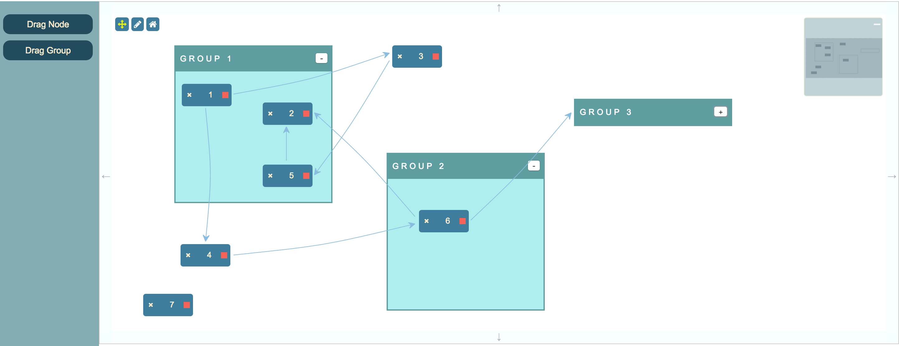
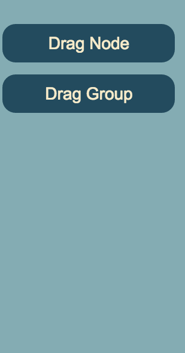
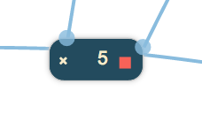

This is an example of how to use the Groups functionality.

{
"dependencies": {
"font-awesome": "^4.7.0",
"jsplumbtoolkit": "file:../../jsplumbtoolkit.tgz"
}
}
<link href="//maxcdn.bootstrapcdn.com/bootstrap/3.2.0/css/bootstrap.min.css" rel="stylesheet">
<link href="node_modules/font-awesome/css/font-awesome.min.css" rel="stylesheet">
<link rel="stylesheet" href="node_modules/jsplumbtoolkit/dist/css/jsplumbtoolkit-defaults.css">
<link rel="stylesheet" href="node_modules/jsplumbtoolkit/dist/css/jsplumbtoolkit-demo.css">
<link rel="stylesheet" href="app.css">
Font Awesome, Bootstrap, jsplumbtoolkit-demo.css, and app.css are used for this demo and are not jsPlumb Toolkit requirements. jsplumbtoolkit-defaults.css is recommended for
all apps using the Toolkit, at least when you first start to build your app. This stylesheet contains sane defaults for the various widgets in the Toolkit.
<script src="node_modules/jsplumbtoolkit/dist/js/jsplumbtoolkit.js"></script>
<script src="app.js"></script>
We import jsplumbtoolkit.js from node_modules (it was listed in package.json). app.js contains the demo code; it is discussed on this page.
This is the template used to render Nodes:
<script type="jtk" id="tmplNode">
<div style="width:${w}px;height:${h}px;">
<div class="name">
<div class="delete" title="Click to delete">
<i class="fa fa-times"/>
</div>
<span>${name}</span>
</div>
<div class="connect"/>
<jtk-source filter=".connect"/>
<jtk-target/>
</div>
</script>
This is the template used to render Groups:
<script type="jtk" id="tmplGroup">
<div>
<div class="group-title">
${title}
<button class="expand"></button>
</div>
<div jsplumb-group-content="true"></div>
</div>
</script>
Group templates can have arbitrary markup as with Node templates. By default, the DOM element representing any Node
that is a child of the Group will be appended to the Group's root element. You can, however, mark a place in the Group
element that should act as the parent of Node elements - by setting jsplumb-group-content="true" on the element you
wish to use. In this demo we use that concept to provide a title bar for each Group onto which Node elements can never
be dragged.
This is the data used by this demonstration:
var data = {
"groups":[
{"id":"one", "title":"Group 1", "left":100, top:50 },
{"id":"two", "title":"Group 2", "left":450, top:250, type:"constrained" }
],
"nodes": [
{ "id": "window1", "name": "1", "left": 10, "top": 20, group:"one" },
{ "id": "window2", "name": "2", "left": 140, "top": 50, group:"one" },
{ "id": "window3", "name": "3", "left": 450, "top": 50 },
{ "id": "window4", "name": "4", "left": 110, "top": 370 },
{ "id": "window5", "name": "5", "left": 140, "top": 150, group:"one" },
{ "id": "window6", "name": "6", "left": 50, "top": 50, group:"two" },
{ "id": "window7", "name": "7", "left": 50, "top": 450 }
],
"edges": [
{ "source": "window1", "target": "window3" },
{ "source": "window1", "target": "window4" },
{ "source": "window3", "target": "window5" },
{ "source": "window5", "target": "window2" },
{ "source": "window4", "target": "window6" },
{ "source": "window6", "target": "window2" }
]
};
As with Nodes, if you're using the Absolute layout, you can specify left/top properties for the element (we have provided
these values for every Group and Node but we actually use the Spring layout in this demonstration).
Additionally, Groups are considered to have a type, just like Nodes, whose default value is default, but which can
be overridden in the same way as that of Nodes. Here we see the Group 2 is defined to be of type constrained, which we
will discuss in the View section below.
The relationship between Nodes and Groups is written into each Node's data, not into the Group data. Here we see that
4 of the Nodes in our dataset have a group declared.
The Toolkit instance is created with a groupFactory and a nodeFactory; these are the functions used when a new
Group or Node is created after the user drags something on to the canvas:
var toolkit = window.toolkit = jsPlumbToolkit.newInstance({
groupFactory:function(type, data, callback) {
data.title = "Group " + (toolkit.getGroupCount() + 1);
callback(data);
},
nodeFactory:function(type, data, callback) {
data.name = (toolkit.getNodeCount() + 1);
callback(data);
}
});
The view for this demo is:
var view = {
nodes: {
"default": {
template: "tmplNode"
}
},
groups:{
"default":{
template:"tmplGroup",
endpoint:"Blank",
anchor:"Continuous",
revert:false,
orphan:true,
constrain:false
},
constrained:{
parent:"default",
constrain:true
}
}
};
The single Node mapping is the most basic Node mapping possible; Nodes derive their Anchor and Endpoint definitions from
the jsPlumb params passed in to the render call discussed below.
The Group mappings, though, bear a little discussion. First, the default Group mapping:
revert to false if orphan is set to true, but in this demo we included all the possible flags
just for completeness.The constrained Group mapping is declared to extend default, so it gets all of the values defined therein, but it
overrides constrain to be true: Nodes cannot be dragged out of the Group element for this type of Group (in this demo
we set Group 2 to be of type constrained, and Group 1 - and any Groups dragged on - to be of type default).
This is the call that sets up the UI:
var renderer = toolkit.render({
container: canvasElement,
view: view,
layout: {
type: "Spring",
absoluteBacked:false
},
jsPlumb: {
Anchor:"Continuous",
Endpoint: "Blank",
Connector: [ "StateMachine", { cssClass: "connectorClass", hoverClass: "connectorHoverClass" } ],
PaintStyle: { strokeWidth: 1, stroke: '#89bcde' },
HoverPaintStyle: { stroke: "orange" },
Overlays: [
[ "Arrow", { fill: "#09098e", width: 10, length: 10, location: 1 } ]
]
},
miniview: {
container:miniviewElement
},
lassoFilter: ".controls, .controls *, .miniview, .miniview *",
dragOptions: {
filter: ".delete *"
},
events: {
canvasClick: function (e) {
toolkit.clearSelection();
},
modeChanged: function (mode) {
jsPlumb.removeClass(jsPlumb.getSelector("[mode]"), "selected-mode");
jsPlumb.addClass(jsPlumb.getSelector("[mode='" + mode + "']"), "selected-mode");
}
},
consumeRightClick:false
});
Here's an explanation of what the various parameters mean:
This identifies the element into which you wish the Toolkit to render.
These are the Node, Port and Edge definitions for this renderer.
Parameters for the layout. Here we specify a Spring layout, with absoluteBacked set to false. This means that the left
and top values for everything is ignored, except for Nodes that are inside Groups, which do not participate in the
layout and are positioned absolute.
The miniview options provide the the element to convert into a miniview. You can also provide an element ID here.
This selector specifies elements on which a mousedown should not cause the selection lasso to begin. In this demonstration we exclude the buttons in the top left and the miniview.
We listen for two events:
canvasClick - a click somewhere on the widget's whitespace. Then we clear the Toolkit's current selection.
modeChanged - Surface's mode has changed (either "select" or "pan"). We update the state of the buttons.
Recall that the Surface widget is backed by an instance of jsPlumb Community Edition. This parameter sets the Defaults for that object.
Lasso selection is enabled by default on the Surface widget. To activate the lasso, click the pencil icon in the toolbar:

The code that listens to clicks on this icon is as follows:
// pan mode/select mode
jsPlumb.on(".controls", "tap", "[mode]", function () {
renderer.setMode(this.getAttribute("mode"));
});
The tap listener extracts the desired mode from the button that was clicked and sets it on the renderer. This causes
a modeChanged event to be fired, which is picked up by the modeChanged event listener in the View.
Note that here we could have used a click listener, but tap works better for mobile devices.
The lasso works in two ways: when you drag from left to right, any node that intersects your lasso will be selected. When you drag from right to left, only nodes that are enclosed by your lasso will be selected.
The Surface widget automatically exits select mode once the user has selected something. In this application we also listen to clicks on the whitespace in the widget and switch back to pan mode when we detect one. This is the events argument to the render call:
events: {
canvasClick: function (e) {
toolkit.clearSelection();
}
}
clearSelection clears the current selection and switches back to Pan mode.
In this demonstration, new Nodes/Groups are dragged onto the canvas from a sidebar.

This is configured with the following code:
renderer.registerDroppableNodes({
droppables: jsPlumb.getSelector("#nodePalette li"),
dragOptions: {
zIndex: 50000,
cursor: "move",
clone: true
}
});
The key thing to note in this demo, as distinct from the other demos, is that the element we drag to add a new Group
has a jtk-group attribute set:
<ul>
<li title="Drag Node to canvas">
<i class="icon-tablet"></i>Drag Node
</li>
<li title="Drag Group to canvas" jtk-group="true">
<i class="icon-tablet"></i>Drag Group
</li>
</ul>
For a detailed discussion of this functionality, see this page.

Clicking the X button in this demonstration deletes the current node.
jsPlumb.on("#canvas", "tap", ".delete *", function (e) {
var info = toolkit.getObjectInfo(this);
toolkit.removeNode(info.obj);
});
Clicking the - button in this demonstration collapses a Group. It then changes to a +, which, when clicked, expands the Group.
jsPlumb.on(canvasElement, "tap", ".group-title button", function(e) {
var info = toolkit.getObjectInfo(this);
if (info.obj) {
renderer.toggleGroup(info.obj);
}
});
The label of the button is changed via css: when a group is collapsed, it is assigned the CSS class jsplumb-group-collapsed.
In the CSS for this demo we have these rules:
.group-title button:after {
content:"-";
}
.jtk-group.jtk-group-collapsed .group-title button:after {
content:"+";
}
Another point to note is that the Toolkit does not take any specific action to "collapse" your Groups visually. It is left
up to you to respond to the jsplumb-group-collapsed class as you need to. In this demo, we simply hide the group content
area:
.jtk-group.jtk-group-collapsed [jtk-group-content] {
display:none;
}